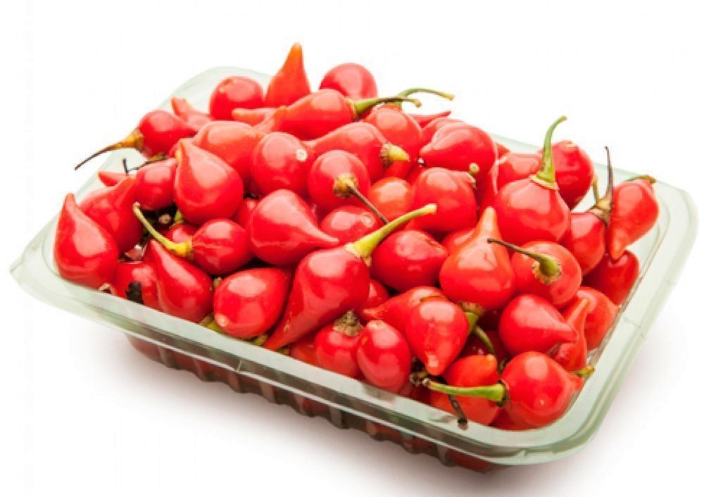
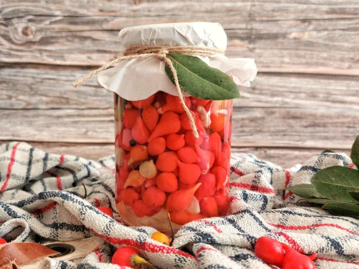
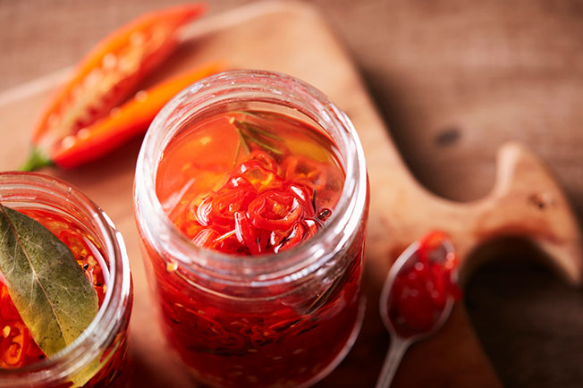

Visão Geral
A pimenta biquinho é uma planta originária do Brasil conhecida por seu sabor suave e formato característico. Nesta seção, você encontrará informações detalhadas sobre essa pimenta única.
Também conhecida como pimenta-de-cheiro, a pimenta biquinho agrega sabor e beleza aos pratos. Essa pimenta é uma espécie nativa brasileira que integra o grupo das pimentas aromáticas e vem sendo amplamente utilizada nas últimas décadas na gastronomia.
Graciosa, bem como bastante aromática e saborosa, a pimenta biquinho vem atraindo cada dia mais os amantes de pimentas, garantindo o seu espaço no mercado. Além disso, pode se tornar uma excelente fonte de renda para o pequeno agricultor.
Pimenta biquinho é uma espécie de pimenta de nome cinetífico Capsicum chinense e pertencente à família Solanaceae.
A pimenteira pode atingir entre 60 cm a 1 metro de altura e suas flores são brancas e hermafroditas. Já seus frutos, de uma coloração vermelha intensa, atingem até 3 cm de comprimento por cerca de 2,5 cm de diâmetro.
Durante décadas, a biquinho foi utilizada apenas como uma planta ornamental. Porém, seu sabor adocicado tornou-a uma das mais apreciadas e consumidas no Brasil, sobretudo em forma de conserva.

Características
A pimenta biquinho possui características marcantes que a diferenciam de outras variedades. Saiba mais sobre seu tamanho, cor, sabor e níveis de ardência.
A pimenta biquinho é facilmente reconhecida pelo seu formato único, que lhe dá o nome. Os frutos pequenos, com cerca de 3 cm de comprimento, são arredondados e com ponta em forma de bico. Quando imaturos, eles são de cor verde-clara, mas podem amadurecer em três cores diferentes: salmão, amarelo e vermelho.

Cultivo
Descubra como cultivar a pimenta biquinho em seu próprio jardim ou horta. Aprenda sobre as condições ideais de cultivo, plantio, rega e cuidados necessários.
O cultivo de pimenta-biquinho exige alguns cuidados. É importante adubar a terra um mês antes da plantação e deixá-la curtindo, isso vai garantir pimentas bem desenvolvidas e crocantes. Quanto à iluminação, as pimentas preferem calor e sol pleno. No entanto, também podem ser cultivadas à meia-sombra.
Se você quer saber como plantar pimenta-biquinho, é importante descobrir que não se pode exagerar na rega para que a raiz não apodreça. O excesso de água também pode facilitar a proliferação de fungos de pragas. Inclusive, saiba que quanto maior o vaso, melhor vai ser o desenvolvimento da muda.

Receitas
Explore deliciosas receitas que utilizam a pimenta biquinho como ingrediente principal. Experimente pratos criativos e saborosos que realçam o sabor único dessa pimenta.
1. Conserva de pimenta-biquinho: que tal preparar uma conserva de pimenta-biquinho muito fácil e prática para ter aí na sua cozinha a hora que você precisar? Tenha em mãos vinagre de álcool, água, sal, açúcar e, claro, pimenta-biquinho!

2. Conserva de pimenta biquinho com alecrim: para dar um sabor a mais à sua conserva de pimenta biquinho, a dica é usar folhas de alecrim frescas, dentes de alho e um pouco de orégano! Você também vai precisar de açúcar, sal e vinagre. O resultado final é um conserva bonita e muito saborosa!
